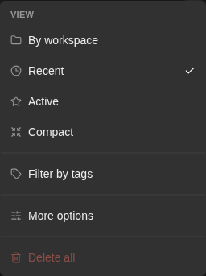
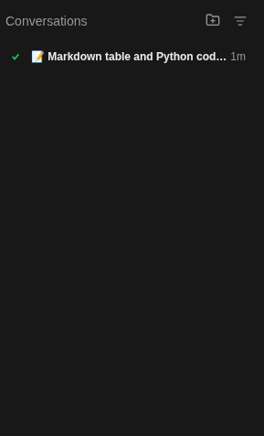

How to get to it
- Always visible in the expanded sidebar on every page (
/, the direct URL/conversations,/conversations/<id>, settings pages): the Conversations section under New Chat / Customize / Automate. At phone width it is inside the drawer opened bysidebar-mobile-menu-toggle. - Header: folder-plus (
conversation-panel-new-thread-picker, aria "Create thread folder — choose workspace or repository"), View (conversation-layouts-toggle), and in grouped mode the Conversations label itself (conversations-header-toggle). - Row hover: pin (
conversation-pin-toggle-<id>) and ⋮ (ellipsis-button, aria "More options"), which openscontext-menu. A row with more tags than fit shows a+Nchip (conversation-card-tag-overflow). The Pinned section has its own More/Less (conversation-panel-pinned-view-more). - View → More options (
advanced-options-row) opensadvanced-conversation-options-modal(Organize, Sort by, Threadsscope-all/scope-relevant, Additional, Automations, Metadata). - Grouped mode: folder heading (
thread-folder-drag-<suffix>), folder+(aria "Start new conversation in <folder>"), folder More/Less (thread-folder-view-more-<suffix>). - No command-menu entry or keyboard shortcut exists for the list.
Before you start
Start with the common launch and health checks, then follow this family’s preconditions in order. Recipes share the fixtures and state named below.
Preconditions:
- Baseline state (launched, doctored,
onboard --skipdone), desktop viewport,deepseek-flashactive for the one prompted conversation. F04.empty-stateand the disabled Delete all are first checked on a run with no conversations (a freshlaunch --new), and again afterF04.delete-all.- Workspaces:
control-openhands fixture git-repo --name qa-f04-repoandcontrol-openhands fixture folder --name qa-f04-folder, then add both through the picker (F03 owns the folder browser):control-openhands browser click 'testid=conversation-panel-new-thread-picker',control-openhands browser click 'testid=add-workspaces-button',control-openhands browser click 'testid=folder-browser-up'twice (from<run>/private/hometo the run directory; check withbrowser text 'testid=folder-browser-current-path'),control-openhands browser dblclick 'testid=folder-browser-entry-workspace',control-openhands browser click 'testid=folder-browser-add-all-subdirs'. The picker popover stays open afterwards;control-openhands browser click 'testid=conversation-panel-new-thread-picker'closes it. - A finished conversation, started right after the View menu bullet (the first two bullets need a run with no conversations):
control-openhands conversation start --prompt "Reply with only the word pong. Do not run any tools." --wait --timeout 240. The model writes the title (✅ Reply only with pong,✅ Reply with pong only, ...): select its row withhas-text=pong. F04.load-moreandF04.folder-preview-moreneed more than 20 conversations, at least 6 in one folder. Empty conversations from the folder+cost no model call (seeF04.folder-new-conversation).F04.cloud-pickerandF04.start-task-cardsare blocked: they need an OpenHands Cloud backend with a connected git provider. The kept rows ofF04.automation-filter(Only automation runs with real runs) and the hiding effect ofF04.hide-olderneed data a fresh run cannot have (an automation-run conversation; a conversation older than one hour).
Behavior inventory
40 stable behavior IDs and their expected behavior
F04.empty-statewith no conversations (By date) the list showsNo conversations found. Read recipe ↓F04.new-thread-pickerthe folder-plus button lists No workspace, every known workspace, + Add Workspace and Manage Workspaces; picking a row starts a conversation there and opens it. Read recipe ↓F04.carda row shows a status dot, the title and the relative time, links to/conversations/<id>, and the open conversation's row is highlighted. Read recipe ↓F04.card-live-statuswhile the agent runs, its row shows the working indicator; once it finishes the row switches to the check mark and the generated title on the next list refresh. Read recipe ↓F04.list-headerthe header divider appears only while the list is scrolled. Read recipe ↓F04.organizeMore options → Organize switches between folders (By workspace) and a flat list (By date); the choice survives a reload. Read recipe ↓F04.grouped-foldersBy workspace shows one folder per known workspace (empty ones included) plus a No workspace folder while any loaded row has no workspace, in any browser. Read recipe ↓F04.folder-collapsea folder heading collapses and expands that folder. Read recipe ↓F04.collapse-allthe Conversations header collapses every folder, then expands them all. Read recipe ↓F04.folder-new-conversationa folder's+starts a conversation in that workspace and opens it. Read recipe ↓F04.folder-preview-morea folder shows five rows; More shows every loaded row, Less returns to five. Read recipe ↓F04.folder-reorderdragging a folder heading onto another reorders the folders and the order persists. Read recipe ↓F04.thread-scopeMore options → Threads → Active only hides paused conversations; All threads shows them again. Read recipe ↓F04.load-more20 conversations load first; Load more fetches the rest and disappears when nothing is left. Read recipe ↓F04.sortSort by Updated or Created reorders the list. Read recipe ↓F04.presetsa preset is checked and survives a reload; Active and Compact hide paused conversations; any manual change readsMore options · Custom. Read recipe ↓F04.hide-olderHide old conversations offers four cutoffs, persists the choice and hides conversations older than it. Read recipe ↓F04.automation-filterMore options → Automations shows all, hides or keeps only automation runs, with its own empty message. Read recipe ↓F04.tag-filterchoosing a tag facet narrows the list to rows with that tag (pins exempt) and survives a reload. Read recipe ↓F04.filter-chipsactive filters show as chips above the list; a chip click removes one, Clear all removes every chip. Read recipe ↓F04.metadata-togglesRepo and branch, Agent / model and Show tags add or remove row chips. Read recipe ↓F04.hover-previewhovering a row for a second shows title, directory, model and creation time, unless Details on hover is off. Read recipe ↓F04.pinthe pin moves a row into a Pinned section above the list, survives a reload and unpins from there. Read recipe ↓F04.pinned-preview-morethe Pinned section previews five rows; its More shows every pinned row and Less returns to five. Read recipe ↓F04.card-rename⋮ → Rename edits the title inline; Enter saves, a toast confirms, and the title persists. Read recipe ↓F04.tag-overflowtags that do not fit on a row collapse into a+Nchip (ariaShow N more tags) whose popover lists the hidden tags without opening the conversation; Escape closes it. Read recipe ↓F04.stop⋮ → Stop Conversation asks for confirmation and pauses the conversation; the item is gone once paused. Read recipe ↓F04.download⋮ → Download conversation data savesconversation_<id>.zip. Read recipe ↓F04.download-errora failed download shows one toast that names the cause and closes the ⋮ menu. Read recipe ↓F04.archive⋮ → Archive Conversation asks for confirmation, hides and unpins the row, and leaves the conversation if it was open. Read recipe ↓F04.show-archived-unarchiveShow archived brings archived rows back with anArchivedchip; Unarchive restores a row without confirmation. Read recipe ↓F04.delete⋮ → Delete Conversation asks for confirmation, deletes it on the server and leaves it if it was open. Read recipe ↓F04.delete-allView → Delete all asks for confirmation with a count and deletes every conversation. Read recipe ↓F04.collapsed-railthe collapsed sidebar rail shows no conversation list; expanding brings it back. Read recipe ↓F04.phoneat 390 px the list lives in the sidebar drawer, fits the viewport, and picking a row closes the drawer. Read recipe ↓F04.cloud-pickeron a Cloud backend the folder-plus picker shows provider tabs and a repository search; a picked repository starts a conversation. Read recipe ↓F04.start-task-cardson a Cloud backend in-progress start tasks show as cards linking to/conversations/task-<id>. Read recipe ↓
Readable recipes
Read each script from top to bottom. Code is copied from the map; prose gives the action, expected observation, and conditions. <id>, <run> and similar placeholders stand for values from your own run. Short forms such as browser count continue the same control-openhands invocation; they are kept as documented.
Expected observations describe the recipe’s contract. Captures below selected recipes show representative real states from this snapshot; they do not mark every mapped behavior as passed. Follow cleanup before moving to another family.
No recipes match. Try another word or a behavior ID.
Empty list #
- NoteOn a run with no conversations, run
- Check
control-openhands browser text 'testid=conversation-panel-empty-state' - ExpectThe text is
No conversations found.
View menu #
- Do
control-openhands browser click 'testid=conversation-layouts-toggle' - Check
control-openhands browser snapshot 'testid=conversation-layouts-menu' - Note: radios
By workspace,Recent([checked]),Active,Compact, itemsFilter by tags,More optionsandDelete all(control-openhands browser attr 'testid=layout-preset-recent-activity' aria-checkedistrue). - NoteWith no conversations
- Check
control-openhands browser enabled 'testid=delete-all-conversations'is
false; after - Do
control-openhands browser click 'testid=tag-filters-section' - Check
control-openhands browser text 'testid=tag-filters-empty'is
No tags yet. - Do
control-openhands browser press Escape - Notecloses the menu (
browser count 'testid=conversation-layouts-menu'is0).

Conversation View menu with By workspace, Recent, Active, Compact, tag filtering and More options.
Representative documentation capture, not a complete run of this recipe or family. Captured on an isolated local backend at desktop viewport using the current main checkout.
How this screenshot was taken
canvas: 1.26.0 · agent server: 1.53.0 · sdk: 1.53.0 · automation: 1.19.0
OH_VERIFY_RUN="$OH_VERIFY_RUN" control-openhands browser goto /
OH_VERIFY_RUN="$OH_VERIFY_RUN" control-openhands browser wait testid=home-screen
OH_VERIFY_RUN="$OH_VERIFY_RUN" control-openhands browser click testid=open-workspace-button
OH_VERIFY_RUN="$OH_VERIFY_RUN" control-openhands browser wait role=dialog
OH_VERIFY_RUN="$OH_VERIFY_RUN" control-openhands browser press Escape
OH_VERIFY_RUN="$OH_VERIFY_RUN" control-openhands browser press Control+k
OH_VERIFY_RUN="$OH_VERIFY_RUN" control-openhands browser wait testid=command-menu
OH_VERIFY_RUN="$OH_VERIFY_RUN" control-openhands browser press Escape
OH_VERIFY_RUN="$OH_VERIFY_RUN" control-openhands browser click testid=conversation-layouts-toggle
OH_VERIFY_RUN="$OH_VERIFY_RUN" control-openhands browser wait testid=conversation-layouts-menu
OH_VERIFY_RUN="$OH_VERIFY_RUN" control-openhands browser screenshot testid=conversation-layouts-menu --feature F04.view-menu --name conversation-view-menuStart in a workspace #
- Do
control-openhands browser goto / - Do
control-openhands browser click 'testid=conversation-panel-new-thread-picker' - Check
control-openhands browser snapshot 'testid=conversation-panel-new-thread-popover' - Note: buttons
No workspace,qa-f04-folder,qa-f04-repo,+ Add Workspace,Manage Workspaces. - Do
control-openhands browser click 'testid=conversation-panel-new-thread-popover >> testid=launch-workspace >> has-text=qa-f04-repo' --expect-url '/conversations/'returns
/conversations/<id>, and - Do
control-openhands conversation listshows that id with
workspaceending in/workspace/qa-f04-repo. - NoteFrom
/again,testid=launch-no-workspaceopens a new conversation whose row sits in the No workspace folder. - Do
control-openhands browser click 'testid=manage-workspaces-button' - Noteopens
testid=manage-workspaces-modal(F03); Escape closes it.
Row opens its conversation #
- NoteFrom
/(control-openhands browser goto /; the previous bullet's launch left a conversation page, where--expect-url '/conversations/'would pass at once) run - Do
control-openhands browser click 'testid=conversation-card >> has-text=pong' --expect-url '/conversations/' - Check
control-openhands browser attr 'testid=conversation-card >> has-text=pong' data-active(
true; other rowsfalse). - Do
control-openhands browser eval "document.querySelector('[data-testid=conversation-card][data-active=true]').closest('a').getAttribute('href')"is
/conversations/<id>?backend=default-local. - ExpectThe finished conversation shows
testid=conversation-status-check, idle onesconversation-status-active(green), paused onesconversation-status-paused(grey). - ExpectThe reopened chat has its transcript back:
- Wait
control-openhands browser wait 'testid=agent-message' - Check
control-openhands browser text 'testid=agent-message >> nth=-1'is
pongand - Check
control-openhands browser text 'testid=user-message >> nth=-1'is the prompt, with
- Check
control-openhands browser count 'testid=error-message-banner' - Note
0(browser screenshot --feature F04.card --name reopened).

The sidebar lists a finished conversation named Markdown table and Python code block with a completion check.
Representative documentation capture, not a complete run of this recipe or family. Captured on an isolated local backend at desktop viewport using the current main checkout.
How this screenshot was taken
canvas: 1.26.0 · agent server: 1.53.0 · sdk: 1.53.0 · automation: 1.19.0
OH_VERIFY_RUN="$OH_VERIFY_RUN" control-openhands browser goto /
OH_VERIFY_RUN="$OH_VERIFY_RUN" control-openhands browser wait testid=home-screen
OH_VERIFY_RUN="$OH_VERIFY_RUN" control-openhands browser screenshot testid=conversation-panel --feature F04.card --name conversation-sidebarLive status #
- Do
control-openhands conversation start --prompt "Reply with only the word ping. Do not run any tools."(no
--wait; one tiny model call), then - Wait
control-openhands browser wait 'testid=conversation-panel >> testid=conversation-status-working' --timeout 20000 - Note: the active row (
Conversation <id5>) shows the working indicator. - NoteAfter
- Wait
control-openhands conversation wait <id> --timeout 180 - Notereports
finished, - Wait
control-openhands browser wait 'testid=conversation-panel >> [data-testid=conversation-card][data-active=true] >> testid=conversation-status-check' --timeout 60000 - Notesucceeds and
- Check
control-openhands browser text 'testid=conversation-panel >> [data-testid=conversation-card][data-active=true] >> testid=conversation-card-title'is the generated title (it varies:
✅ Reply with only ping,✅ Reply only ping, no tools). - ExpectThe row lags the conversation by up to about 40 s (list refresh).
Group by workspace #
- Do
control-openhands browser click 'testid=conversation-layouts-toggle' - Do
control-openhands browser click 'testid=layout-preset-by-workspace' - Check
control-openhands browser snapshot 'testid=conversation-panel' - NoteRegions
No workspace,qa-f04-repoandqa-f04-foldereach list their own conversations; a workspace without conversations still gets a folder. - NoteSecond view in another browser:
- Do
control-openhands browser reset - Do
control-openhands onboard --skip - Notechoose By workspace again; the workspace conversations must still be in their folders (currently they all fall into No workspace, a known failure).
Collapse one folder #
- Do
control-openhands browser click '[data-testid^="thread-folder-drag-ws-"][data-testid$="qa-f04-repo"]' - Check
control-openhands browser attr '[data-testid^="thread-folder-drag-ws-"][data-testid$="qa-f04-repo"]' aria-expanded(
false) and - Check
control-openhands browser count '[data-testid^="thread-folder-ws-"][data-testid$="qa-f04-repo"] >> testid=conversation-card'(
0). - NoteClick again:
trueand the cards return.
Collapse all #
- Do
control-openhands browser click 'testid=conversations-header-toggle' - Check
control-openhands browser attr 'testid=conversations-header-toggle' aria-expanded(
false) and - Check
control-openhands browser count 'testid=conversation-panel-list-scroll >> testid=conversation-card'(
0). - NoteClick again:
trueand every card is back.
New conversation in a folder #
- Do
control-openhands browser goto / - Check
control-openhands browser click 'role=button[name="Start new conversation in qa-f04-folder"]' --expect-url '/conversations/'(returns the new
/conversations/<id>), then - Check
control-openhands browser count '[data-testid^="thread-folder-ws-"][data-testid$="qa-f04-folder"] >> testid=conversation-card' - Noteit grows by one.
- NoteRepeating
browser goto /plus the click forqa-f04-repo18 times arranges the data for the next two bullets.
Folder preview #
- NoteWith more than five conversations in
qa-f04-repo, - Check
control-openhands browser count '[data-testid^="thread-folder-ws-"][data-testid$="qa-f04-repo"] >> testid=conversation-card'is
5and - Check
control-openhands browser text '[data-testid^="thread-folder-view-more-ws-"][data-testid$="qa-f04-repo"]'is
More. - NoteClick that button: every loaded row shows and the label is
Less; click again:5.
Reorder folders #
- NoteIn By workspace mode read the order with
- Do
control-openhands browser eval "[...document.querySelectorAll('[data-testid^=thread-folder-drag-]')].map(e=>e.textContent.trim())" - Do
control-openhands browser drag '[data-testid^="thread-folder-drag-ws-"][data-testid$="qa-f04-folder"]' '[data-testid^="thread-folder-drag-ws-"][data-testid$="qa-f04-repo"]' --position before - ExpectThe same eval now starts with
qa-f04-folder,qa-f04-repo, also afterbrowser reload, and - Do
control-openhands browser eval "JSON.parse(localStorage.getItem('conversation-panel-preferences')).state.groupFolderOrder"lists the
ws:<path>keys in that order.
Load more #
- NoteIn By date mode (More options →
testid=organize-chronological, or the Recent preset) with 22 or more conversations, - Check
control-openhands browser count 'testid=conversation-panel-list-scroll >> testid=conversation-card'is
20. - Do
control-openhands browser click 'testid=load-more-conversations' - Wait
control-openhands browser wait 'testid=load-more-conversations' --state detached --timeout 15000 - Notethe count is the total (
23with 23 conversations). - NoteIn By workspace mode (
organize-grouped, thenbrowser reload) the same click adds the later rows to their own folders: with the oldest rows in No workspace and none of them loaded,testid=thread-folder-__none_workspaceappears only after the click andbrowser count 'testid=conversation-card'grows by the number of unloaded No workspace rows (6 → 9 with three such rows, 5 → 7 with two). - ExpectA folder that already shows five rows keeps the extra ones behind its More.
Organize #
- Do
control-openhands browser click 'testid=conversation-layouts-toggle' - Do
control-openhands browser click 'testid=advanced-options-row' - Check
control-openhands browser snapshot 'testid=advanced-conversation-options-modal'(sections Organize, Sort by, Threads, Additional, Automations, Metadata),
- Do
control-openhands browser click 'testid=organize-chronological'(
browser attr 'testid=organize-chronological' aria-checkedistrue), - Do
control-openhands browser click 'testid=advanced-options-close' - Do
control-openhands browser reload - Check
control-openhands browser count '[data-testid^=thread-folder-ws-]' - ExpectThe count is
0and the rows form one list;organize-groupedbrings the folders back.
Header divider #
- NoteWith more rows than fit (By date mode with 20 loaded rows, as Organize leaves it; By workspace mode previews too few rows to scroll),
- Do
control-openhands browser eval "document.querySelector('[data-testid=older-conversations-summary]').parentElement.classList.contains('border-border')"is
false; after - Do
control-openhands browser scroll 'testid=conversation-panel-list-scroll' --by 300 - Noteit is
true, andfalseagain after--by -300.
Rename #
- NotePick the oldest untitled conversation (
b8d99...from the picker step; the sort check below needs an old one). - ExpectIt is beyond the first 20 rows after a reload, so first run
- Do
control-openhands browser click 'testid=load-more-conversations' - Wait
control-openhands browser wait 'testid=load-more-conversations' --state detached --timeout 15000 - Do
control-openhands browser scroll 'testid=conversation-card >> has-text=Conversation <id5>'(the first five characters of its id),
- Do
control-openhands browser hover 'testid=conversation-card >> has-text=Conversation <id5>' - Do
control-openhands browser click 'testid=conversation-card >> has-text=Conversation <id5> >> testid=ellipsis-button' - Do
control-openhands browser click 'testid=context-menu >> testid=edit-button' - Do
control-openhands browser fill 'input[data-testid=conversation-card-title]' 'QA_F04 renamed' - Do
control-openhands browser press Enter - Check
control-openhands browser toasts(
Conversation title updated successfully), - Do
control-openhands browser reload - Check
control-openhands browser count 'testid=conversation-card-title >> has-text=QA_F04 renamed'(
1).
Sort #
- NoteUnder Sort by Updated (default) the just-renamed old conversation is first.
- NoteSorting applies to the loaded rows only: after a reload the first page is the 20 most recently updated.
- NoteIn More options run
- Do
control-openhands browser click 'testid=sort-created' - Do
control-openhands browser click 'testid=advanced-options-close' - Do
control-openhands browser eval "[...document.querySelectorAll('[data-testid=conversation-panel-list-scroll] [data-testid=conversation-card-title]')].map(e=>e.textContent)" - Notenow ends with
QA_F04 renamed(with every page loaded, the olderpongrow comes after it), and the View menu row readsMore options · Custom. - NoteRestore with
testid=layout-preset-recent-activity.
Stop #
- NoteOn an idle row open ⋮ and run
- Do
control-openhands browser click 'testid=context-menu >> testid=stop-button' - Check
control-openhands browser snapshot 'role=dialog'reads
Confirm Stop Conversation,Are you sure you want to stop this conversation?. - Do
control-openhands browser click 'role=dialog >> role=button[name="Cancel"]' - Notekeeps it idle (
control-openhands conversation status <id>). - NoteRepeat and click
'role=dialog >> role=button[name="Confirm Close"]'; - Wait
control-openhands conversation wait <id> --until paused --timeout 30 - Notereaches
paused, - Wait
control-openhands browser wait 'testid=conversation-card >> has-text=Conversation <id5> >> testid=conversation-status-paused' - Notesucceeds, and the reopened ⋮ menu has no Stop item.
- Do
control-openhands browser press Escape - Notecloses it (
browser count 'testid=context-menu'is0) and puts focus back on the row's ⋮ (control-openhands browser eval "document.activeElement.dataset.testid"isellipsis-button).
Presets #
- Do
control-openhands browser click 'testid=conversation-layouts-toggle' - Do
control-openhands browser click 'testid=layout-preset-recent-activity' - Do
control-openhands browser reload - Notereopen the menu, then
- Check
control-openhands browser attr 'testid=layout-preset-recent-activity' aria-checked(
true) and - Check
control-openhands browser text 'testid=advanced-options-row'(
More options). - NoteWith the paused conversation from Stop (above),
testid=layout-preset-focused(Active) andtestid=layout-preset-minimal(Compact) make - Check
control-openhands browser count 'testid=conversation-card >> has-text=Conversation <id5>' - Note
0; Recent shows it again.
Threads scope #
- NoteWith the paused conversation from Stop and the Recent preset, open More options and run
- Do
control-openhands browser click 'testid=scope-relevant'(
browser attr 'testid=scope-relevant' aria-checkedistrue) and - Do
control-openhands browser click 'testid=advanced-options-close' - Check
control-openhands browser count 'testid=conversation-card >> has-text=Conversation <id5>'is
0, also afterbrowser reload, and the View menu now checks no preset and readsMore options · Custom(Recent shows old conversations; the Active preset also hides them).testid=scope-allbrings the row back (1) and Recent is checked again.
Hide older #
- NoteIn More options,
- Check
control-openhands browser attr 'testid=toggle-older-conversations' aria-checkedis
false(Recent shows conversations of every age) and - Check
control-openhands browser text 'testid=older-conversation-cutoff'is
Over 1 week. - Do
control-openhands browser click 'testid=older-conversation-cutoff'(radios Over 1 hour, Over 1 day, Over 1 week, Over 30 days),
- Do
control-openhands browser click 'role=menuitemradio[name="Over 1 hour"]' - Do
control-openhands browser click 'testid=toggle-older-conversations >> text=Hide old conversations'(
aria-checkedturnstrue; a click on the row's center lands on the cutoff dropdown instead), - Do
control-openhands browser click 'testid=advanced-options-close' - Do
control-openhands browser reload - Do
control-openhands browser storage --values - Note:
conversation-panel-preferencesholds"showOlderConversations":falseand"olderConversationCutoff":"1h", and the View menu readsMore options · Custom. - NoteRestore with
testid=layout-preset-recent-activity(it turns hiding off but keeps the cutoff) and the cutoffOver 1 week. - NoteHiding itself needs a conversation last updated before the cutoff (not reachable on a fresh run).
Automation filter #
- NoteIn More options run
- Do
control-openhands browser click 'testid=automation-filter-only' - Do
control-openhands browser click 'testid=advanced-options-close' - Notewith no automation runs
- Check
control-openhands browser text 'testid=conversation-panel-empty-state'is
No conversations match the automation filter(Load more stays).testid=automation-filter-hidekeeps every manual conversation;testid=automation-filter-allrestores the default. - NoteUnpin everything first: a pinned row suppresses the empty state.
Row metadata #
- NoteIn More options click
testid=toggle-repo-branch-metadata,testid=toggle-llm-profilesandtestid=toggle-tags-metadata, thentestid=advanced-options-close. - Check
control-openhands browser testids 'testid=conversation-card >> has-text=Conversation <id5>'lists
conversation-card-workspace-folder(qa-f04-repo) andconversation-card-agent-chip(deepseek-flash) and noconversation-card-tag-chip. - NoteRestore with
testid=layout-preset-recent-activity(presets reset all metadata toggles).
Hover preview #
- Do
control-openhands browser mouse-click 900 900 - Do
control-openhands browser tooltip 'testid=conversation-card >> has-text=Conversation <id5>' - ExpectThe text is the title,
Directorywith the workspace path,Modeldeepseek/deepseek-flashandCreatedwith a date. - ExpectAfter
testid=toggle-hover-metadatais off (aria-checkedfalse), - Do
control-openhands browser tooltip ... --timeout 5000 - Notefinds no tooltip.
Pin #
- Do
control-openhands browser hover 'testid=conversation-card >> has-text=QA_F04 renamed' - Do
control-openhands browser click 'testid=conversation-card >> has-text=QA_F04 renamed >> [data-testid^=conversation-pin-toggle-]' - Check
control-openhands browser text 'testid=conversation-panel-pinned-section'(
Pinnedand the row), - Check
control-openhands browser count 'testid=conversation-card >> has-text=QA_F04 renamed'(
1: not duplicated) and, afterbrowser reload, - Check
control-openhands browser attr 'testid=conversation-panel-pinned-section >> [data-testid^=conversation-pin-toggle-]' aria-pressed(
true). - NoteUnpin with
browser hoverandbrowser clickontestid=conversation-panel-pinned-section >> testid=conversation-cardand its[data-testid^=conversation-pin-toggle-]; after a reloadbrowser count 'testid=conversation-panel-pinned-section'is0.
Pinned preview #
- NotePin six rows (
browser scroll,browser hover, then click each row's[data-testid^=conversation-pin-toggle-]). - Check
control-openhands browser count 'testid=conversation-panel-pinned-section >> testid=conversation-card'is
5and - Check
control-openhands browser text 'testid=conversation-panel-pinned-view-more'is
More; - Do
control-openhands browser click 'testid=conversation-panel-pinned-view-more' - Notemakes the count
6and the labelLess; click again:5. - NoteUnpin all six with
browser hoverand a pin click on'testid=conversation-panel-pinned-section >> testid=conversation-card >> nth=0', repeated.
Edit tags #
- NoteOpen ⋮ on a row (hover,
testid=ellipsis-button) and run - Do
control-openhands browser click 'testid=context-menu >> testid=edit-tags-button' - Do
control-openhands browser fill 'testid=new-tag-key-input' 'Bad Key' - Do
control-openhands browser press Enter --selector 'testid=new-tag-key-input' - Note→
- Check
control-openhands browser text 'testid=edit-tags-error'is
Tag names may only contain lowercase letters and numbers; keytitlewithtestid=add-tag-button→This tag name is reserved; keyqaenv,browser fill 'testid=new-tag-value-input' one, Enter →browser count 'testid=edit-tag-row-qaenv'is1; keyqaenvagain →This tag name is already in use; keyqalongwith a 257-character value →Tag values must be 256 characters or fewer; keyqabarewith an empty value left in the inputs, then - Do
control-openhands browser click 'testid=edit-conversation-tags-modal >> testid=confirm-button' - Check
control-openhands browser toastsshows
Tags updated; afterbrowser reloadthe row shows chipsQabareandQaenv: one(conversation-card-tag-chip), and - Check
control-openhands api GET '/api/conversations/search?limit=3'has tags
qaenv: one,qabare: "".
Tag overflow #
- NoteOn the tagged row add three more tags in Edit tags (keys
qaregion,qastage,qaowner, valuesvalue-for-<key>, Enter after each) and save. - ExpectAfter
browser reloadthe row showsQabareandQaenv: oneplus - Check
control-openhands browser text 'testid=conversation-card >> has-text=Conversation <id5> >> testid=conversation-card-tag-overflow' - Note
+3(aria-labelShow 3 more tags). - NoteClicking it keeps the URL, sets
aria-expandedtrue, and - Check
control-openhands browser text 'testid=conversation-card-tag-overflow-popover'lists
Qaowner value-for-qaowner,Qaregion …,Qastage …(3conversation-card-tag-overflow-row); - Do
control-openhands browser press Escape - Notecloses it (count
0).
Remove tags #
- NoteReopen Edit tags on that row and run
- Do
control-openhands browser click 'testid=remove-tag-qaregion'(likewise
remove-tag-qastage,remove-tag-qaowner); - Check
control-openhands browser count 'testid=edit-tags-rows >> [data-testid^=edit-tag-row-]'is
2. - NoteSave with
testid=edit-conversation-tags-modal >> testid=confirm-button(Tags updated); afterbrowser reloadthe+3chip is gone and - Check
control-openhands api GET '/api/conversations/search?limit=1' --pick items.0.tagsis
clientsource,qabare,qaenvonly.
Tag filter #
- ExpectAfter Edit tags (above) gave one row
qaenv=one, run - Do
control-openhands browser click 'testid=conversation-layouts-toggle' - Do
control-openhands browser click 'testid=tag-filters-section' - Do
control-openhands browser click 'testid=tag-facet-row-qaenv=one'(
aria-checkedtrue; the menu stays open), - Do
control-openhands browser press Escape - Check
control-openhands browser count 'testid=conversation-panel-list-scroll >> testid=conversation-card' - Note: only the tagged row plus pinned rows.
- ExpectThe count is the same after
browser reload.
Filter chips #
- NoteWith the facet active,
- Check
control-openhands browser text 'testid=conversation-active-tag-filters'is
qaenv=oneandClear all. - Do
control-openhands browser click 'testid=active-tag-filter-qaenv=one' - Noteremoves it (
browser count 'testid=conversation-active-tag-filters'is0). - NoteSelect
tag-facet-row-qaenv=oneandtag-facet-row-qabare=again, then - Do
control-openhands browser click 'testid=clear-tag-filters' - Note: the strip disappears and the full list returns.
Download #
- NoteOpen ⋮ and run
- Do
control-openhands browser click 'testid=context-menu >> testid=download-trajectory-button' - Check
control-openhands browser downloads - ExpectA file
…-conversation_<id>.ziplands in<run>/private/downloads; - Check
control-openhands browser downloads --last 1 --inspectlists
<id-hex>/base_state.jsonandmeta.jsonfor any row, plus event folders such asbash_events/for a conversation that ran (thepongrow; it is the oldest, so Load more first).
Download failure #
- NoteWith ⋮ already open on a row, run
- Check
control-openhands browser errors --clear - Do
control-openhands service stop agent-server - Noteclick
testid=context-menu >> testid=download-trajectory-button, then - Check
control-openhands browser toasts --history - Check
control-openhands browser count 'testid=context-menu' - ExpectThere is exactly one toast,
Couldn't download the conversation data: <cause>(with the server down the cause is the transport textHTTP request failed (502 Bad Gateway): "Bad Gateway: connect ECONNREFUSED 127.0.0.1:<port>"), and the menu is closed (0). - Check
control-openhands browser errors --app-onlyhas
pageErrors0; its 502 request and console error are the outage itself. - Do
control-openhands restart - Check
control-openhands doctor
Archive #
- NoteOpen a conversation from its row, open ⋮ and run
- Do
control-openhands browser click 'testid=context-menu >> testid=archive-button' - Check
control-openhands browser snapshot 'role=dialog'reads
Archive conversationandArchive "<title>"? The conversation stays available with its full history and can be restored from Show archived. - Do
control-openhands browser click 'role=dialog >> testid=cancel-button' - Notekeeps the row.
- NoteRepeat and
- Do
control-openhands browser click 'role=dialog >> testid=confirm-button' --expect-url '/conversations(\?|$)' - Notethe row count is
0, also afterbrowser reload. - NoteArchiving a pinned row removes the Pinned section.
Show archived and Unarchive #
- NoteIn More options click
testid=toggle-show-archived(aria-checkedtrue) andtestid=advanced-options-close; - Check
control-openhands browser count 'testid=conversation-card >> has-text=Conversation <id5> >> testid=conversation-card-archived-chip'is
1and the ⋮ menu offersUnarchive Conversation. - Do
control-openhands browser click 'testid=context-menu >> testid=unarchive-button' - Noteopens no dialog (
browser count 'role=dialog'0) and the chip count drops to0. - NoteTurn Show archived off again.
Delete #
- NoteOpen a conversation from its row, open ⋮ and run
- Do
control-openhands browser click 'testid=context-menu >> testid=delete-button' - Notethe dialog reads
Confirm DeleteandAre you sure you want to delete the "<title>" conversation? This action cannot be undone. - Do
control-openhands browser click 'role=dialog >> role=button[name="Cancel"]' - Notekeeps the row.
- NoteRepeat and
- Do
control-openhands browser click 'role=dialog >> role=button[name="Confirm Delete"]' --expect-url '/conversations(\?|$)' - Noteafter
browser reloadthe row count is0and - Check
control-openhands api GET /api/conversations/<id>is
404.
Phone #
- Do
control-openhands browser viewport phone - Do
control-openhands browser goto / - Do
control-openhands browser click 'testid=sidebar-mobile-menu-toggle' - Check
control-openhands browser bbox 'testid=sidebar-mobile-drawer >> testid=conversation-panel'(
insideViewporttrue,pageHorizontalOverflowfalse) and - Do
control-openhands browser screenshot --feature F04.phone --name drawer - NoteHover a row in the drawer and click its
testid=ellipsis-button; - Check
control-openhands browser bbox 'testid=context-menu'is inside the viewport.
- Do
control-openhands browser mouse-click 380 20 - Notecloses the menu (
browser count 'testid=context-menu'0) and the drawer (control-openhands browser wait 'testid=sidebar-mobile-drawer' --state hidden --timeout 5000; an immediatevisiblestill readstrueduring the slide-out). - NoteReopen the drawer and
- Do
control-openhands browser click 'testid=sidebar-mobile-drawer >> testid=conversation-card >> has-text=QA_F04 renamed' --expect-url '/conversations/' - Wait
control-openhands browser wait 'testid=sidebar-mobile-drawer' --state hidden --timeout 5000 - Notesucceeds.
- NoteReturn with
- Do
control-openhands browser viewport desktop
Delete all #
- Do
control-openhands browser click 'testid=conversation-layouts-toggle' - Do
control-openhands browser click 'testid=delete-all-conversations' - Check
control-openhands browser snapshot 'role=dialog' - Note:
Delete all conversations,Are you sure you want to delete N conversations?. - NoteCancel keeps every row.
- NoteConfirm with
- Do
control-openhands browser click 'role=dialog >> role=button[name="Confirm Delete"]' - Wait
control-openhands browser wait 'role=dialog' --state detached --timeout 30000 - Check
control-openhands api GET '/api/conversations/search?limit=100'has no items, Delete all is disabled again, and in By date mode the empty state returns.
- NoteExpected for every conversation; today N and the deletion cover only the loaded pages (22 conversations, 20 loaded: 2 remain).
Collapsed rail #
- Do
control-openhands browser click 'testid=sidebar-collapse-toggle' - Check
control-openhands browser count 'testid=conversation-panel'(
0). - NoteExpand with
- Do
control-openhands browser click 'aside[data-collapsed]'(see F02); the count is
1.
Cloud picker and start tasks #
- NoteBlocked without an OpenHands Cloud backend and git provider.
- NoteOn Cloud, the same
conversation-panel-new-thread-pickeropenscloud-provider-tabs,cloud-repo-search-input(Search repositories) andlaunch-repositoryrows; start tasks rendertestid=start-task-cardlinking to/conversations/task-<id>.
Cleanup #
- NoteView → Delete all twice (the second pass removes the rows the first left behind), until
api GET '/api/conversations/search?limit=100'is empty; re-apply the Recent preset. - NoteFixture folders and the workspace registry vanish with the run.
Gotchas and known limits
- A plain
--expect-url '/conversations/'returns at once when the browser is already on a conversation page. Start creation clicks from/(browser goto /), and never navigate away before the click returns: leaving early skips the client-side metadata write, so the new conversation lands in No workspace although the server has its working directory. - Workspace grouping, pins, archives and preferences live in this browser's localStorage (
openhands-agent-server-conversation-metadata,pinned-conversations,archived-conversations,conversation-panel-preferences).browser resetloses them: archived rows reappear and every conversation moves to No workspace. - Folder test ids embed the sanitized absolute workspace path (
thread-folder-ws--tmp-...-qa-f04-repo). Select with[data-testid^="thread-folder-ws-"][data-testid$="<folder>"]or by the+button's accessible name. - Row links carry
?backend=default-local; anchor URL regexes without$. - Hover and ⋮ need the row on screen:
browser scroll '<row>'first, andbrowser hoverbefore clickingellipsis-buttonor the pin. - Escape closes the ⋮ menu and returns focus to its ⋮ button (#18044); an outside
browser mouse-clickcloses it too. If Tab has moved focus to the next row's link, that row's preview tooltip opens and takes the first Escape, so press Escape twice. Inside the phone drawer the first Escape closes the menu and the next one the drawer. - The Stop, Delete and Delete all dialogs have no test ids on their buttons (
data-testidis dropped byBrandButton) (#17915); userole=dialog >> role=button[name="..."]. The Archive and Edit tags dialogs do havecancel-buttonandconfirm-button. - With the drawer open at phone width there are two
conversation-panelelements; scope withtestid=sidebar-mobile-drawer >> .... - Recent is exactly the fresh default layout (By date, Updated, all threads, old conversations shown), so a new user sees Recent checked. Active and Compact also turn on Hide old conversations: Recent plus a manual Threads → Active only reads
More options · Custom, not Active. Presets never change the hide-older cutoff. - In By workspace mode Load more often adds no visible row: later rows join existing folders behind their More button.
- By workspace never shows
No conversations foundwhile any workspace is registered: empty workspace folders stay. - Pinned rows bypass tag and automation filters and suppress the filtered empty states; unpin before asserting them.
- The page size is 20; filters, Active scope and archives apply only to loaded pages.
- The ⋮ menu offers Stop for idle and finished conversations too (they count as active); it disappears only once paused.
service stop agent-serverneedscontrol-openhands restartand abrowser reloadbefore anything else works.- The list refreshes on an interval: a row keeps
conversation-status-workingandConversation <id5>for up to about 40 s after the conversation finished. Usebrowser wait ... --timeout 60000, not an immediatecount. - Model-written titles vary from run to run; match finished conversations on a word from the prompt (
has-text=pong), never on the whole title. - Known issue #17919: Delete all deletes only the loaded pages, and its dialog states that smaller count (
F04.delete-all).
Source paths: src/components/features/sidebar/sidebar-conversation-list.tsx, src/components/features/conversation-panel/ (panel, layouts menu, advanced options modal, new-thread picker, folder list/row, pinned section, active filter chips, confirm and tags modals, conversation-card/), src/stores/conversation-panel-preferences-store.ts, src/stores/pinned-conversations-store.ts, src/stores/archived-conversations-store.ts, src/hooks/query/use-paginated-conversations.ts, src/hooks/use-download-conversation.ts, src/api/conversation-metadata-store.ts.